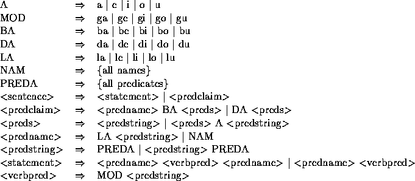

| Loglan-A Logical Language |
Loglan is a synthetic speakable language designed to test some of the fundamental problems of linguistics, such as the Sapir Whorf hypothesis. It is syntactically unambiguous, culturally neutral and metaphysically parsimonious. What follows is a gross over-simplification of an already very small grammar of some 200 rules.
Loglan sentences consist of a series of words and names, separated by spaces, and are terminated by a period (.). Loglan words all end with a vowel; names, which are derived extra-linguistically, end with a consonant. Loglan words are divided into two classes--little words which specify the structure of a sentence, and predicates which have the form CCVCV or CVCCV where C represents a consonant and V represents a vowel (see examples later).
The subset of Loglan that we are considering uses the following grammar:

Write a program that will read a succession of strings and determine whether or not they are correctly formed Loglan sentences.
Each Loglan sentence will start on a new line and will be terminated by a period (.). The sentence may occupy more than one line and words may be separated by more than one whitespace character. The input will be terminated by a line containing a single `#'. You can assume that all words will be correctly formed.
Output will consist of one line for each sentence containing either `Good' or `Bad!'.
la mutce bunbo mrenu bi ditca. la fumna bi le mrenu. djan ga vedma le negro ketpi. #
Good Bad! Good